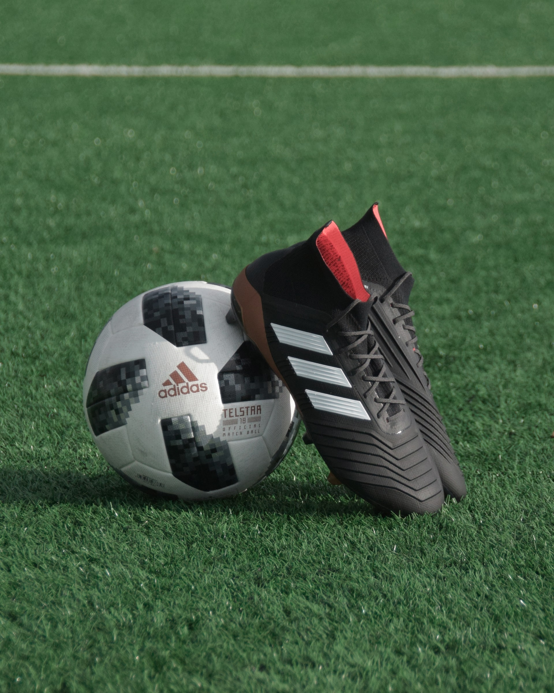

About me
Hello! My name is Boran Hadri. I'm 14 years old. I attend the "Peter Mahringer" school. In the future I would like to work as a programmer. My favorite subjects are:

- German
- English
- System Technic
- Media
- Sport
I also have a lot of hobbies. They are: playing soccer, listening to music, reading books, playing computer games, meeting my friends, chatting with friends and watching films. My favorite football teams are: Vllaznia, Bayern Munich, Albania, and Germany. And, yes, that is me.